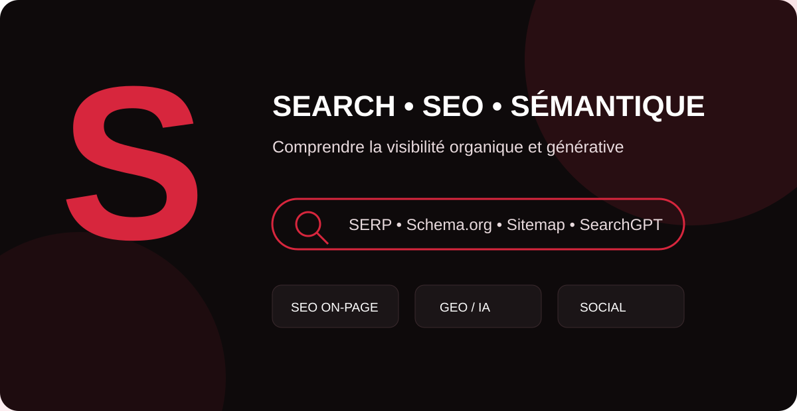

La lettre S concentre une grande partie du vocabulaire moderne de la visibilité digitale. Ce guide MinoSeo définit chaque notion de façon opérationnelle, distingue les termes officiels des concepts émergents et relie SEO classique, GEO, IA générative, social media et mesure de performance.

Share of Model SoM
Le Share of Model (SoM) est un indicateur émergent qui cherche à mesurer la part de présence d’une marque dans les réponses produites par des modèles d’IA. Il peut observer la fréquence de citation, de recommandation ou de mention d’une marque sur un ensemble de prompts représentatifs.
Il n’existe pas de standard universel : la valeur dépend du modèle testé, des formulations, de la date, du pays et de la méthodologie. Le SoM doit donc être suivi comme une tendance comparative, accompagné d’indicateurs de citations, de sentiment, de trafic et de conversions.
SEO predictif
Le SEO prédictif utilise des données historiques, des tendances et parfois des modèles statistiques ou d’apprentissage automatique pour anticiper l’évolution de la demande, des performances ou des opportunités de contenu. Il peut aider à prévoir une saison, prioriser des pages ou détecter des sujets en croissance.
Une prédiction n’est jamais une garantie de classement. Les changements d’algorithmes, la concurrence et l’actualité peuvent modifier le résultat : l’approche doit rester pilotée par des scénarios et des données régulièrement actualisées.
SearchGPT
SearchGPT était le prototype de recherche d’OpenAI lancé pour tester une expérience combinant réponses conversationnelles et informations du web. Ses enseignements ont ensuite nourri les fonctions de recherche intégrées à ChatGPT.
Pour le GEO, cette évolution illustre le passage d’une logique de « dix liens » à des réponses synthétiques appuyées sur des sources. Une marque gagne donc à publier des informations explicites, vérifiables, bien structurées et suffisamment distinctives pour être comprises et citées.
saisonnalite referencement
La saisonnalité du référencement désigne les variations récurrentes de demande et de trafic liées au calendrier : fêtes, météo, vacances, rentrée, événements ou cycles professionnels. Une baisse saisonnière n’indique pas forcément une perte SEO.
Il est utile de comparer les performances à période équivalente, d’étudier les tendances de requêtes et de publier les contenus suffisamment tôt pour laisser aux moteurs le temps de les explorer, les indexer et les positionner.
srsltid
srsltid est un paramètre que l’on peut observer dans certaines URL issues de Google. Comme tout paramètre de suivi ou de navigation, il peut compliquer les analyses si les outils considèrent plusieurs variantes d’une même URL comme des pages différentes.
En pratique, l’objectif SEO est de conserver des URL canoniques stables, d’éviter de créer des liens internes inutilement paramétrés et de configurer les outils analytics afin de ne pas fragmenter les rapports.
SNI
SNI (Server Name Indication) est une extension de TLS qui permet au navigateur d’indiquer le nom de domaine demandé lors de l’établissement d’une connexion sécurisée. Un même serveur peut ainsi héberger plusieurs domaines HTTPS avec des certificats adaptés.
Ce n’est pas un facteur SEO à optimiser comme un titre ou un contenu, mais une configuration HTTPS défaillante peut rendre un site inaccessible, provoquer des alertes de certificat et dégrader fortement l’expérience d’exploration.
seo multilingue
Le SEO multilingue optimise un site destiné à plusieurs langues. Il ne consiste pas à traduire mécaniquement des mots-clés : il faut adapter l’intention, le vocabulaire, les contenus et parfois l’offre à chaque marché linguistique.
Des URL distinctes, des balises hreflang cohérentes, des contenus réellement localisés et une navigation claire aident les moteurs à proposer la bonne version aux utilisateurs.
Score seo
Un score SEO est généralement une note créée par un outil d’audit pour synthétiser plusieurs contrôles : balises, performance, liens, indexabilité ou contenu. Il n’existe pas de « score SEO Google » universel qui déterminerait directement les positions.
slug
Le slug est la partie descriptive d’une URL, par exemple glossaire-seo-s. Un bon slug est court, lisible, stable et représentatif du contenu. Il évite les identifiants opaques lorsque cela est possible.
Changer un slug déjà indexé modifie l’URL : il faut alors mettre en place une redirection permanente pertinente et mettre à jour les liens internes.
suivi de positionnement
Le suivi de positionnement consiste à observer l’évolution des positions d’un site sur un ensemble de requêtes. Il aide à identifier des gains, pertes, effets de saisonnalité et opportunités par page ou thématique.
Une position seule reste insuffisante : localisation, appareil, fonctionnalités de SERP et personnalisation peuvent modifier l’affichage. Il faut la croiser avec impressions, clics, CTR, trafic et conversions.
SMO
Le SMO (Social Media Optimization) regroupe les méthodes visant à optimiser la présence et la diffusion d’une marque sur les réseaux sociaux : profils, formats, calendrier, engagement, partage et cohérence éditoriale.
Le SMO peut amplifier la notoriété, les recherches de marque et la distribution des contenus. Il complète le SEO sans se confondre avec lui.
Search Generative Experience
La Search Generative Experience (SGE) était le nom de l’expérimentation lancée par Google dans Search Labs en 2023 pour tester des réponses génératives directement dans Search. Cette expérimentation a précédé le déploiement plus large des AI Overviews.
Le terme reste utile historiquement, mais pour une stratégie actuelle il est préférable de suivre les fonctionnalités IA effectivement déployées dans Google Search, notamment AI Overviews et AI Mode.
Qu’est-ce que le SAIO
SAIO est un acronyme utilisé par certains acteurs pour désigner l’optimisation de la visibilité dans les environnements de recherche assistés par intelligence artificielle. Son expansion exacte et son périmètre ne sont pas aussi standardisés que SEO.
Dans la pratique, il recoupe souvent des principes de GEO/AEO : contenu clair, réponses directes, entités identifiables, preuves, données structurées pertinentes et informations cohérentes sur le web.
soft 404
Une soft 404 apparaît lorsqu’une URL renvoie techniquement un statut de succès, souvent HTTP 200, alors que son contenu indique en réalité qu’il n’existe rien d’utile à cette adresse. Le moteur peut alors la traiter comme une page introuvable.
Si une ressource n’existe réellement plus et n’a pas d’équivalent, un code 404 ou 410 est plus explicite. Si elle a été déplacée, une redirection pertinente est préférable.
social selling
Le social selling consiste à utiliser les réseaux sociaux pour identifier des prospects, développer la confiance, démontrer son expertise et accompagner la décision commerciale. Il repose davantage sur la relation et la valeur apportée que sur la prospection massive.
SEO, contenus experts et social selling se renforcent : un contenu bien référencé peut nourrir les conversations commerciales, tandis que les retours du terrain révèlent de nouvelles questions à traiter.
sitemap video
Un sitemap vidéo fournit aux moteurs des informations sur les vidéos présentes sur un site. Il peut faciliter la découverte de ressources vidéo, notamment lorsqu’elles sont difficiles à identifier autrement.
Il complète les bonnes pratiques VSEO : page accessible, miniature stable, métadonnées descriptives et, lorsque pertinent, données structurées VideoObject.
SMM marketing
Le SMM (Social Media Marketing) englobe les actions marketing menées sur les réseaux sociaux, organiques ou payantes : création de contenu, animation, influence, publicité, génération de leads et mesure de performance.
Le SMM est plus large que le SMO : le premier décrit une stratégie marketing globale, tandis que le second insiste sur l’optimisation de la présence et de la diffusion.
Sitelinks
Les sitelinks sont des liens supplémentaires que Google peut afficher sous un résultat principal afin d’aider l’utilisateur à accéder directement à des sections importantes d’un site. Leur affichage est automatisé.
Une architecture logique, des titres clairs et un maillage interne descriptif facilitent la compréhension de la structure du site, sans garantir l’apparition de sitelinks.
Sitelink géographique
Le terme sitelink géographique n’est pas une appellation SEO standard de Google. Il peut désigner, selon le contexte, un lien menant vers une page locale ou un élément associé à une implantation géographique dans une interface de recherche ou publicitaire.
Pour éviter les ambiguïtés, il vaut mieux préciser s’il s’agit de SEO local, de pages de zones desservies, de liens annexes organiques ou d’assets de liens annexes dans Google Ads.
Site miroir
Un site miroir reproduit tout ou partie d’un autre site sur un domaine ou serveur différent. Historiquement, les miroirs pouvaient servir à distribuer des fichiers ou assurer une disponibilité géographique.
En SEO, dupliquer un site sans nécessité claire peut créer des problèmes de duplication, de canonicalisation et de dilution des signaux. Une architecture unique et maîtrisée est généralement préférable.
SEO off-page
Le SEO off-page regroupe les leviers externes au site qui contribuent à sa visibilité et à sa réputation : backlinks éditoriaux, relations presse, citations de marque, partenariats et présence dans des écosystèmes pertinents.
La qualité et la pertinence priment sur le volume. Les systèmes artificiels conçus principalement pour manipuler les classements exposent à des risques.
spam report
Un spam report est un signalement adressé à un moteur lorsqu’un utilisateur estime qu’un résultat ou un site emploie des pratiques contraires aux politiques de spam. Il ne garantit pas une action manuelle immédiate.
Pour un propriétaire de site, la meilleure prévention reste de respecter les politiques de spam, d’éviter les schémas de liens artificiels et de privilégier une création de valeur réelle.
Siloing
Le siloing organise les contenus en ensembles thématiques cohérents. Chaque silo regroupe une page principale et des contenus complémentaires reliés par un maillage interne logique.
Cette architecture aide les utilisateurs à naviguer et rend les relations entre sujets plus explicites. Il ne faut toutefois pas créer des silos tellement fermés qu’ils empêchent des liens utiles entre contenus connexes.
Storytelling marketing
Le storytelling marketing utilise une narration structurée pour rendre un message plus mémorable : contexte, problème, tension, solution et résultat. Il peut humaniser une expertise et illustrer concrètement la valeur d’une offre.
En SEO et GEO, le récit ne remplace pas les faits. Les informations essentielles doivent rester explicites, structurées et vérifiables afin d’être comprises par les lecteurs comme par les systèmes automatisés.
SEO international
Le SEO international optimise un site pour plusieurs pays et/ou langues. Il implique le choix d’une architecture d’URL, la localisation des contenus, les signaux hreflang, la cohérence des canonicals et l’étude des intentions propres à chaque marché.
Un site international performant ne se contente pas de traduire : il adapte vocabulaire, monnaie, références culturelles, offre et preuves de confiance.
SEO mobile
Le SEO mobile vise une expérience de recherche et de navigation efficace sur smartphone : contenu équivalent, responsive design, performance, lisibilité, navigation tactile et absence d’obstacles intrusifs.
La version mobile doit exposer les contenus, liens, images et données structurées importants. L’optimisation mobile est aujourd’hui une composante normale du SEO, pas un chantier séparé.
SEO on page
Le SEO on-page rassemble les optimisations effectuées directement sur les pages : intention de recherche, contenu, titre, headings, liens internes, médias, URL, données structurées pertinentes et expérience utilisateur.
L’objectif est de produire une page compréhensible, utile et techniquement accessible, plutôt que de répéter mécaniquement un mot-clé.
Sémantique
En SEO, la sémantique concerne le sens des mots, leurs relations et le contexte d’un sujet. Travailler la sémantique consiste à couvrir les concepts, entités, questions et sous-thèmes nécessaires pour répondre précisément à une intention.
Une richesse sémantique naturelle améliore la compréhension du lecteur. Elle ne doit pas devenir une accumulation artificielle de synonymes ou de mots-clés.
SEM Search engine marketing
Le SEM (Search Engine Marketing) désigne le marketing réalisé autour des moteurs de recherche. Selon les usages, le terme englobe SEO et publicité sur les moteurs, ou est employé plus étroitement pour parler de search payant.
Pour éviter toute confusion dans un reporting, précisez toujours si SEM désigne l’ensemble du search marketing ou uniquement les campagnes payantes.
schema.org
Schema.org est un vocabulaire partagé permettant de décrire de façon structurée des entités et informations d’une page : organisation, produit, article, événement, vidéo, personne, etc. Le format JSON-LD est couramment utilisé pour l’implémenter.
Les moteurs ne prennent pas nécessairement en charge toutes les propriétés de Schema.org dans leurs résultats enrichis. Il faut suivre les types et propriétés effectivement supportés par chaque moteur.
Sitemap XML
Un Sitemap XML est un fichier qui liste les URL que l’éditeur souhaite signaler aux moteurs, avec éventuellement certaines métadonnées. Il facilite la découverte, notamment sur les sites volumineux, nouveaux ou complexes.
Un sitemap ne force ni l’exploration ni l’indexation. Il doit contenir de préférence des URL canoniques, indexables et utiles, et être maintenu à jour.
serp
SERP signifie Search Engine Results Page, la page de résultats d’un moteur. Elle peut contenir liens organiques, annonces, images, vidéos, résultats locaux, featured snippets, AI Overviews et autres fonctionnalités.
Analyser une SERP permet de comprendre l’intention dominante, les formats privilégiés et la concurrence réelle. En 2026, cette analyse doit dépasser le simple classement bleu traditionnel et intégrer les expériences de recherche assistées par IA.
Tableau de synthèse : les grandes familles de la lettre S
| Famille | Termes clés | Enjeu principal |
|---|---|---|
| SEO & architecture | SEO on-page/off-page, siloing, slug, sitemap, schema.org | Rendre le site accessible, structuré et pertinent. |
| Search & IA | SearchGPT, SGE, SAIO, Share of Model | Comprendre la visibilité dans les réponses génératives. |
| International & mobile | SEO multilingue, international, mobile | Servir la bonne expérience selon langue, pays et appareil. |
| Mesure | Score SEO, suivi de positionnement, saisonnalité | Interpréter les données sans réduire le SEO à une seule note. |
| Social | SMO, SMM, social selling | Développer notoriété, engagement et acquisition. |
Construisez une visibilité durable sur Search et dans les réponses IA
MinoSeo associe SEO, GEO, contenu, netlinking et analyse pour transformer votre visibilité en opportunités commerciales.
Demander un audit gratuit